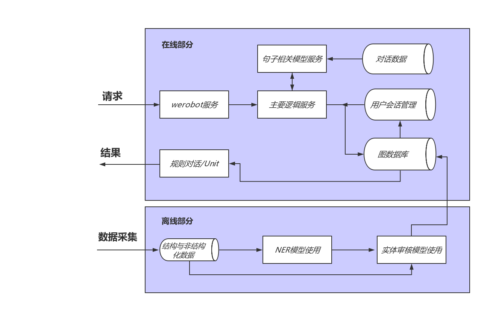

第二章:在线医生的总体架构与工具介绍
2.1 在线医生的总体架构¶
- 学习目标:
- 了解在线医生项目的总体架构
- 项目整体架构图: 
- 架构图分析:
- 整个项目分为: 在线部分和离线部分
- 在线部分包括: werobot服务模块, 主要逻辑服务模块, 句子相关模型服务模块, 会话管理模块(redis), 图数据库模块以及规则对话/Unit模块.
- 离线部分包括: 结构与非结构化数据采集模块, NER模型使用模块, 以及实体审核模型使用模块.
- 在线部分数据流: 从用户请求开始, 通过werobot服务, 在werobot服务内部请求主服务, 在主服务中将调用会话管理数据库redis, 调用句子相关模型服务, 以及调用图数据库, 最后将查询结果输送给对话规则模版或者使用Unit对话API回复.
- 离线部分数据流: 从数据采集开始, 将获得结构化和非结构化的数据, 对于结构化数据将直接使用实体审核模型进行审核, 然后写入图数据库; 对于非结构化数据, 将使用NER模型进行实体抽取, 然后通过实体审核后再写入图数据库.
2.2 总体架构中的工具介绍¶
- 学习目标:
- 了解总体架构中使用了哪些工具.
- 掌握总体架构中各个工具的简介, 作用, 安装和基本使用方法.
- 总体架构中使用的工具:
- Flask web服务框架
- Redis数据库
- Gunicorn服务组件
- Supervisor服务监控器
- Neo4j图数据库
- Flask web服务框架:
- 简介:
- Flask框架是当下最受欢迎的python轻量级框架, 也是pytorch官网指定的部署框架. Flask的基本模式为在程序里将一个视图函数分配给一个URL，每当用户访问这个URL时，系统就会执行给该URL分配好的视图函数，获取函数的返回值，其工作过程见图.

- 作用:
- 在项目中, Flask框架是主逻辑服务和句子相关模型服务使用的服务框架.
安装:
# 使用pip安装Flask pip install Flask==1.1.1基本使用方法:
# 导入Flask类
from flask import Flask
# 创建一个该类的实例app, 参数为__name__, 这个参数是必需的，
# 这样Flask才能知道在哪里可找到模板和静态文件等东西.
app = Flask(__name__)
# 使用route()装饰器来告诉Flask触发函数的URL
@app.route('/')
def hello_world():
"""请求指定的url后，执行的主要逻辑函数"""
# 在用户浏览器中显示信息:'Hello, World!'
return 'Hello, World!'
if __name__ == '__main__':
app.run(host="0.0.0.0", port=5000)
- 代码位置: /data/doctor_onine/main_serve/app.py
- 启动服务:
python app.py
- 启动效果:
- 通过浏览器打开地址http://0.0.0.0:5000可看见打印了'Hello, World'.
- Redis数据库:

- 简介:
- Redis（全称：Remote Dictionary Server 远程字典服务）是一个开源的使用ANSI C语言编写、支持网络、可基于内存亦可持久化的日志型、Key-Value数据库，并提供多种语言的API.
- 作用:
- 在项目中, Redis用于会话管理数据库, 保存用户聊天历史.
- 安装:
# 使用yum安装redis yum install redis -y
- 基本使用方法:
- Redis支持四种数据结构的存储: String(字符串), Hash(散列), List(列表), Set(集合), Sorted Set(有序集合).
- 在这里我们将着重介绍如何在python中使用Hash(散列)进行读写.
- 安装python中的redis驱动:
# 使用pip进行安装
pip install redis
- 启动redis服务:
# 启动redis-server, 这里使用了默认配置, 端口是6379.
redis-server
- 在python中使用Hash(散列)进行读写:
# coding=utf-8
# redis配置
REDIS_CONFIG = {
"host": "0.0.0.0",
"port": 6379
}
# 导入redis驱动
import redis
# 创建一个redis连接池
pool = redis.ConnectionPool( **REDIS_CONFIG)
# 从连接池中初始化一个活跃的连接对象
r = redis.StrictRedis(connection_pool=pool)
# hset表示使用hash数据结构进行数据写入
# uid代表某个用户的唯一标识
uid = "8888"
# key是需要记录的数据描述
key = "该用户最后一次说的话:".encode('utf-8')
# value是需要记录的数据具体内容
value = "再见, 董小姐".encode('utf-8')
r.hset(uid, key, value)
# hget表示使用hash数据结构进行数据读取
result = r.hget(uid, key)
print(result.decode('utf-8'))
- 输出效果:
再见, 董小姐
- Gunicorn服务组件:

- 简介:
- Gunicorn是一个被广泛使用的高性能的Python WSGI UNIX HTTP服务组件(WSGI: Web Server Gateway Interface)，移植自Ruby的独角兽（Unicorn ）项目，具有使用非常简单，轻量级的资源消耗，以及高性能等特点.
- 作用:
- 在项目中, Gunicorn和Flask框架一同使用, 能够开启服务, 处理请求,因其高性能的特点能够有效减少服务丢包率.
- 安装:
# 使用pip安装gunicorn pip install gunicorn==20.0.4
- 基本使用方法:
# 使用其启动Flask服务:
gunicorn -w 1 -b 0.0.0.0:5000 app:app
# -w 代表开启的进程数, 我们只开启一个进程
# -b 服务的IP地址和端口
# app:app 是指执行的主要对象位置, 在app.py中的app对象
# 如果使其在后台运行可使用:
# nohup gunicorn -w 1 -b 0.0.0.0:5001 app:app &
- Supervisor服务监控:
- 简介:
- Supervisor是用Python开发的一个client/server服务，是Linux/Unix系统下的一个进程管理工具。它可以很方便的监听、启动、停止、重启一个或多个进程, 并守护这些进程。
- 作用:
- 在项目中, Supervisor用于监控和守护主要逻辑服务和redis数据库服务.
- 安装:
# 使用yum安装supervisor yum install supervisor -y
- 基本使用方法:
# 编辑配置文件, 指明监控和守护的进程开启命令,
# 请查看/data/doctor_online/supervisord.conf文件
# 开启supervisor, -c用于指定配置文件
supervisord -c /data/doctor_online/main_server/supervisord.conf
# 查看监控的进程状态:
supervisorctl status
# main_server RUNNING pid 31609, uptime 0:32:20
# redis RUNNING pid 31613, uptime 0:32:18
# 关闭supervisor
supervisorctl shutdown
- 还可以通过浏览器查看可视化监控页面: http://0.0.0.0:9001
- Neo4j图数据库:
- 因为在项目中, Neo4j图数据库作为核心的存储和查询数据库, 因此会在第三章: Neo4j图数据库中对其进行详细的介绍.
- 本章总结:
- 学习了架构图分析:
- 整个项目分为: 在线部分和离线部分
- 在线部分包括: werobot服务模块, 主要逻辑服务模块, 句子相关模型服务模块, 会话管理模块(redis), 图数据库模块以及规则对话/Unit模块.
- 离线部分包括: 结构与非结构化数据采集模块, NER模型使用模块, 以及实体审核模型使用模块.
- 学习了架构图分析:
---
* 学习了总体架构中使用的工具:
* Flask web服务框架
* Redis数据库
* Gunicorn服务组件
* Supervisor服务监控器
* Neo4j图数据库
---
* Flask web服务框架:
* 作用: 在项目中, Flask框架是主逻辑服务和句子相关模型服务使用的服务框架.
---
* Redis数据库:
* 作用: 在项目中, Redis用于会话管理数据库, 保存用户聊天历史.
---
* Gunicorn服务组件:
* 作用: 在项目中, Gunicorn和Flask框架一同使用, 能够开启服务, 处理请求,因其高性能的特点能够有效减少服务丢包率.
---
* Supervisor服务监控:
* 作用: 在项目中, Supervisor用于监控和守护主要逻辑服务和redis数据库服务.